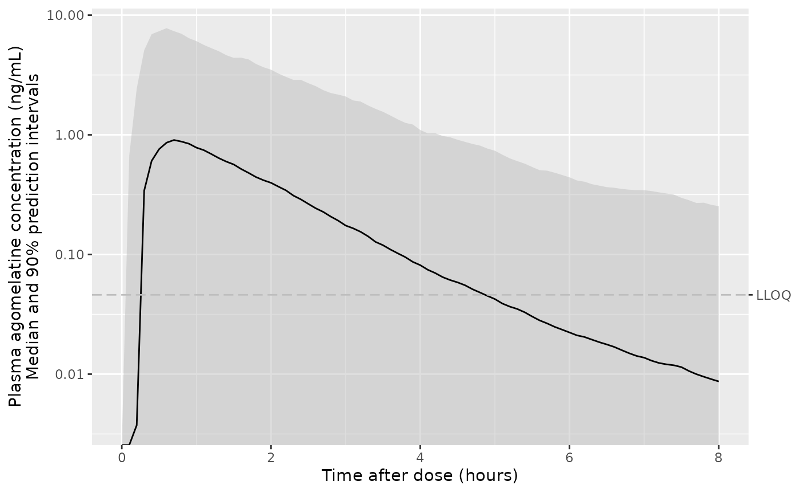
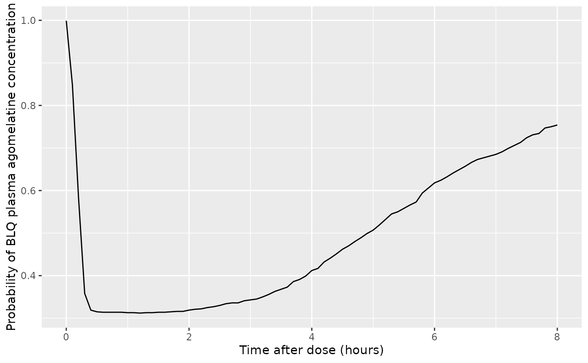
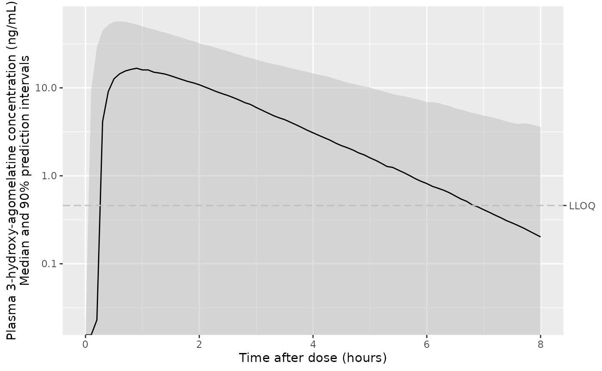
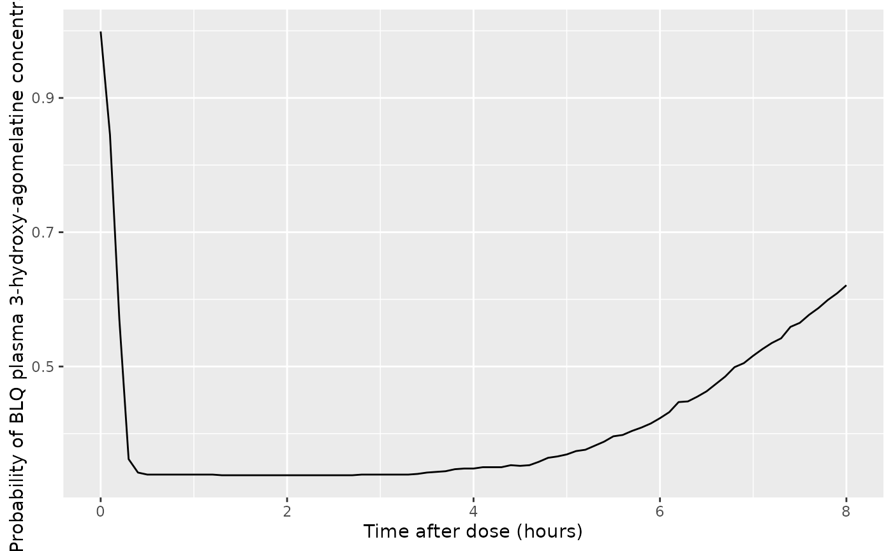
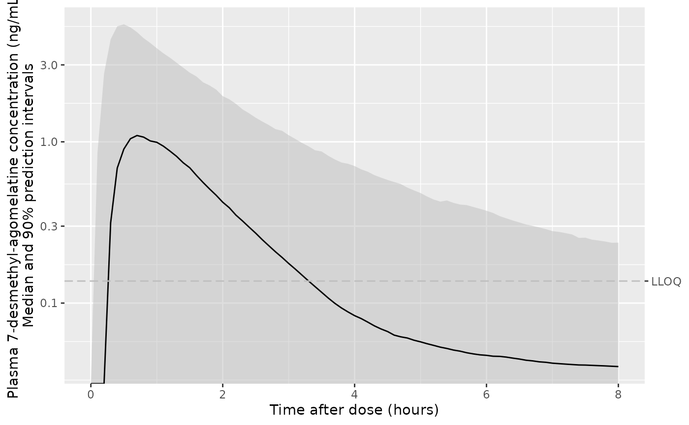
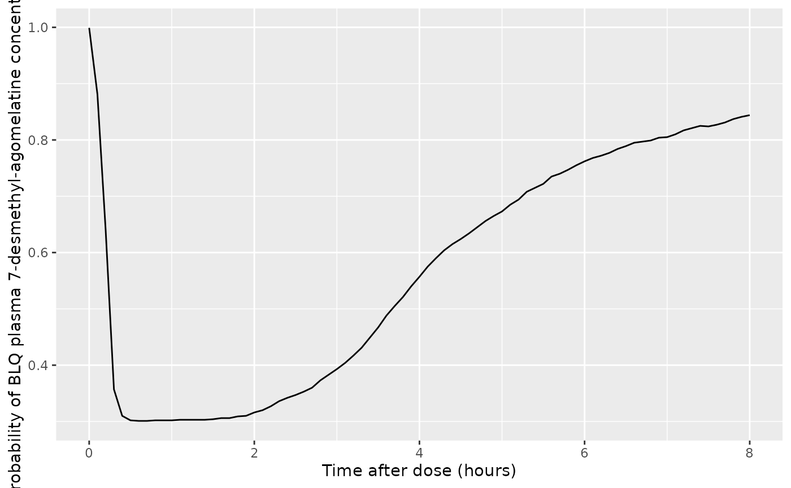

library(nlmixr2lib)
library(nlmixr2est)
#> Loading required package: nlmixr2data
library(rxode2)
#> rxode2 5.0.1 using 2 threads (see ?getRxThreads)
#> no cache: create with `rxCreateCache()`
#>
#> Attaching package: 'rxode2'
#> The following objects are masked from 'package:nlmixr2est':
#>
#> boxCox, yeoJohnson
library(dplyr)
#>
#> Attaching package: 'dplyr'
#> The following objects are masked from 'package:stats':
#>
#> filter, lag
#> The following objects are masked from 'package:base':
#>
#> intersect, setdiff, setequal, union
library(ggplot2)Recreate figure 4 from the original paper
The dose was a single 25 mg dose based on the methods section of the reference.
Xie_2019_agomelatine <- nlmixr(readModelDb("Xie_2019_agomelatine"))
#> Warning: some etas defaulted to non-mu referenced, possible parsing error: e.IOV1, eta17, eta18, eta19, e.IOV2, eta21, eta22, eta23, e.IOV3, eta25, eta26, eta27, e.IOV4, eta29, eta30, eta31, e.IOV5, eta33, eta34, eta35
#> as a work-around try putting the mu-referenced expression on a simple line
d_sim_dosing <-
data.frame(
ID = 1,
EVID = 1,
AMT = 25, # mg
TIME = 0,
CMT = c("DEPOT1", "DEPOT2")
)
d_sim_obs <-
data.frame(
ID = 1,
EVID = 0,
AMT = 0,
TIME = seq(0, 8, by = 0.1),
CMT = "lcalmt"
)
d_sim_prep <- rbind(d_sim_dosing, d_sim_obs)
d_sim_prep$WT <- 60 # kg, based on table 1 from the paper
d_sim_prep$ooc1 <- 1
d_sim_prep$ooc2 <-
d_sim_prep$ooc3 <-
d_sim_prep$ooc4 <- 0
d_sim_pop <- nlmixr2(Xie_2019_agomelatine, data = d_sim_prep, est = "rxSolve", control = list(nStud = 1000))
#> unhandled error message: EE:[lsoda] 70000 steps taken before reaching tout
#> @(lsoda.c:748
#> Warning in FUN(X[[i]], ...): some ID(s) could not solve the ODEs correctly;
#> These values are replaced with 'NA'
d_plot <-
d_sim_pop |>
group_by(time) |>
summarize(
Q05_calmt = quantile(calmt, probs = 0.05, na.rm = TRUE),
Q50_calmt = quantile(calmt, probs = 0.5, na.rm = TRUE),
Q95_calmt = quantile(calmt, probs = 0.95, na.rm = TRUE),
prob_blq_calmt = sum(calmt < 0.046, na.rm = TRUE)/n(),
Q05_c3oh = quantile(c3oh, probs = 0.05, na.rm = TRUE),
Q50_c3oh = quantile(c3oh, probs = 0.5, na.rm = TRUE),
Q95_c3oh = quantile(c3oh, probs = 0.95, na.rm = TRUE),
prob_blq_c3oh = sum(c3oh < 0.460, na.rm = TRUE)/n(),
Q05_c7dm = quantile(c7dm, probs = 0.05, na.rm = TRUE),
Q50_c7dm = quantile(c7dm, probs = 0.5, na.rm = TRUE),
Q95_c7dm = quantile(c7dm, probs = 0.95, na.rm = TRUE),
prob_blq_c7dm = sum(c7dm < 0.137, na.rm = TRUE)/n()
) |>
ungroup()
ggplot(d_plot, aes(x = time, y = Q50_calmt, ymin = Q05_calmt, ymax = Q95_calmt)) +
geom_ribbon(colour = NA, linetype = "63", fill = "gray", alpha = 0.5) +
geom_line() +
geom_hline(yintercept = 0.046, linetype = "63", colour = "gray") +
scale_y_log10(sec.axis = sec_axis(transform = identity, breaks = 0.046, labels = "LLOQ")) +
labs(
x = "Time after dose (hours)",
y = "Plasma agomelatine concentration (ng/mL)\nMedian and 90% prediction intervals"
)
#> Warning in scale_y_log10(sec.axis = sec_axis(transform = identity, breaks = 0.046, : log-10 transformation introduced infinite values.
#> log-10 transformation introduced infinite values.
#> log-10 transformation introduced infinite values.
#> log-10 transformation introduced infinite values.
#> log-10 transformation introduced infinite values.
#> log-10 transformation introduced infinite values.
ggplot(d_plot, aes(x = time, y = prob_blq_calmt)) +
geom_line() +
labs(
x = "Time after dose (hours)",
y = "Probability of BLQ plasma agomelatine concentration"
)
ggplot(d_plot, aes(x = time, y = Q50_c3oh, ymin = Q05_c3oh, ymax = Q95_c3oh)) +
geom_ribbon(colour = NA, linetype = "63", fill = "gray", alpha = 0.5) +
geom_line() +
geom_hline(yintercept = 0.460, linetype = "63", colour = "gray") +
scale_y_log10(sec.axis = sec_axis(transform = identity, breaks = 0.460, labels = "LLOQ")) +
labs(
x = "Time after dose (hours)",
y = "Plasma 3-hydroxy-agomelatine concentration (ng/mL)\nMedian and 90% prediction intervals"
)
#> Warning in scale_y_log10(sec.axis = sec_axis(transform = identity, breaks = 0.46, : log-10 transformation introduced infinite values.
#> log-10 transformation introduced infinite values.
#> log-10 transformation introduced infinite values.
#> log-10 transformation introduced infinite values.
#> log-10 transformation introduced infinite values.
#> log-10 transformation introduced infinite values.
A figure for BQL 3-hydroxy-agomelatine is not in the original paper. It is added here for completeness.
ggplot(d_plot, aes(x = time, y = prob_blq_c3oh)) +
geom_line() +
labs(
x = "Time after dose (hours)",
y = "Probability of BLQ plasma 3-hydroxy-agomelatine concentration"
)
ggplot(d_plot, aes(x = time, y = Q50_c7dm, ymin = Q05_c7dm, ymax = Q95_c7dm)) +
geom_ribbon(colour = NA, linetype = "63", fill = "gray", alpha = 0.5) +
geom_line() +
geom_hline(yintercept = 0.137, linetype = "63", colour = "gray") +
scale_y_log10(sec.axis = sec_axis(transform = identity, breaks = 0.137, labels = "LLOQ")) +
labs(
x = "Time after dose (hours)",
y = "Plasma 7-desmethyl-agomelatine concentration (ng/mL)\nMedian and 90% prediction intervals"
)
#> Warning in scale_y_log10(sec.axis = sec_axis(transform = identity, breaks = 0.137, : log-10 transformation introduced infinite values.
#> log-10 transformation introduced infinite values.
#> log-10 transformation introduced infinite values.
#> log-10 transformation introduced infinite values.
#> log-10 transformation introduced infinite values.
#> log-10 transformation introduced infinite values.
ggplot(d_plot, aes(x = time, y = prob_blq_c7dm)) +
geom_line() +
labs(
x = "Time after dose (hours)",
y = "Probability of BLQ plasma 7-desmethyl-agomelatine concentration"
)